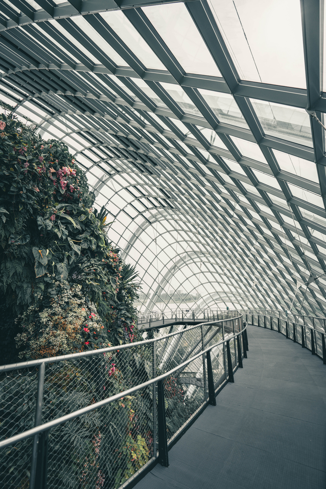
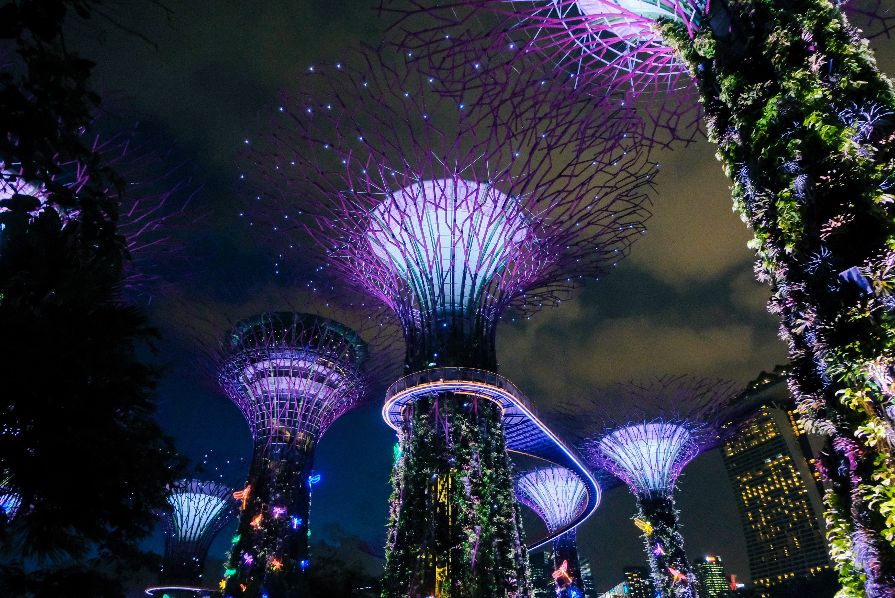
 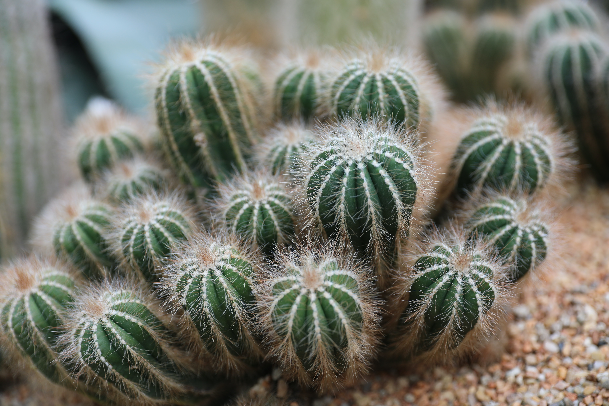
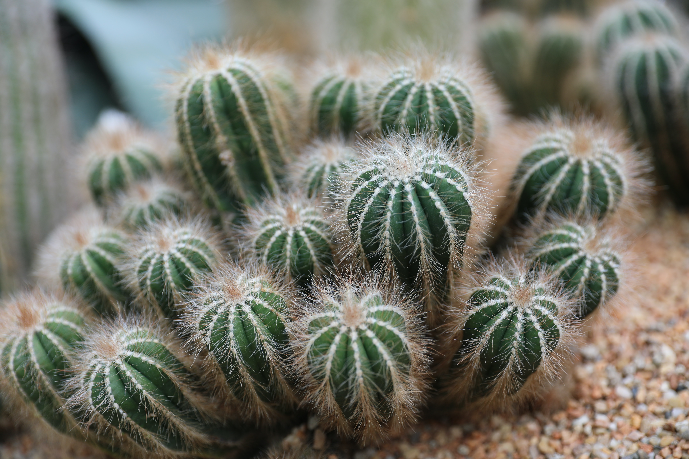
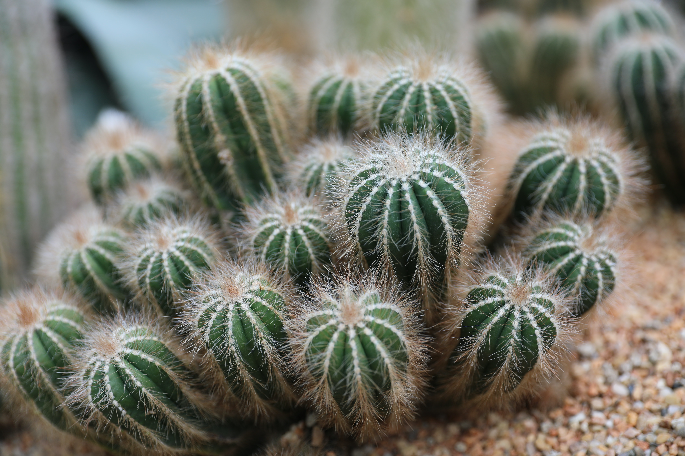
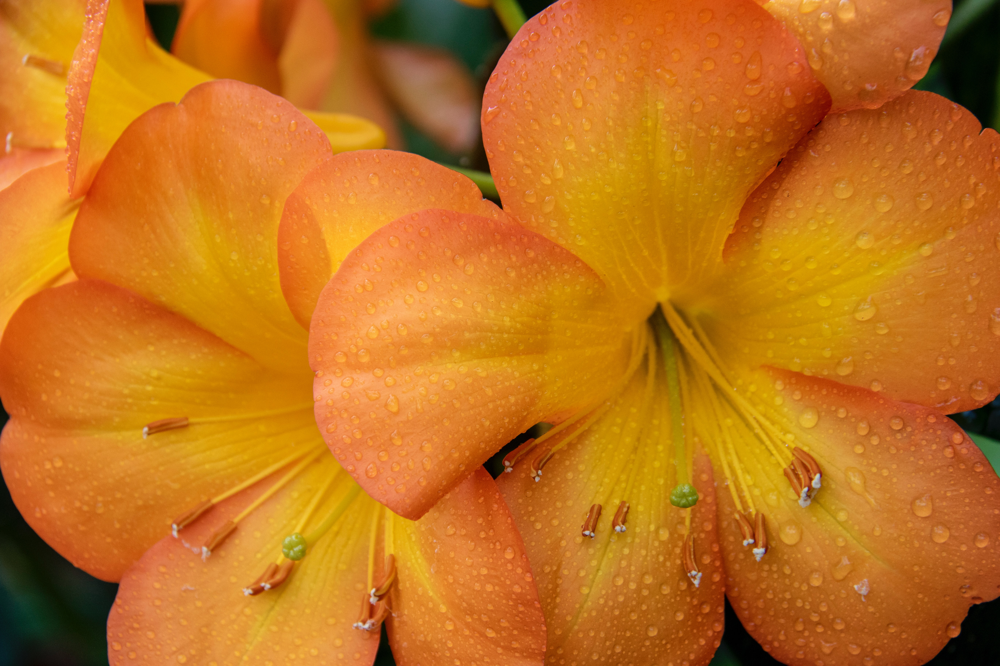
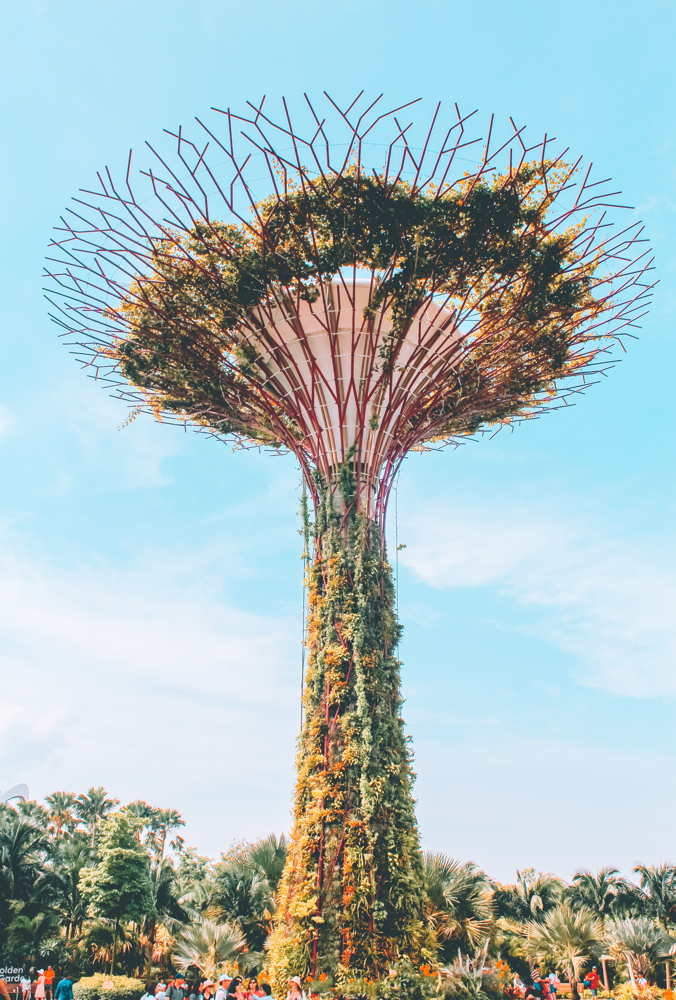
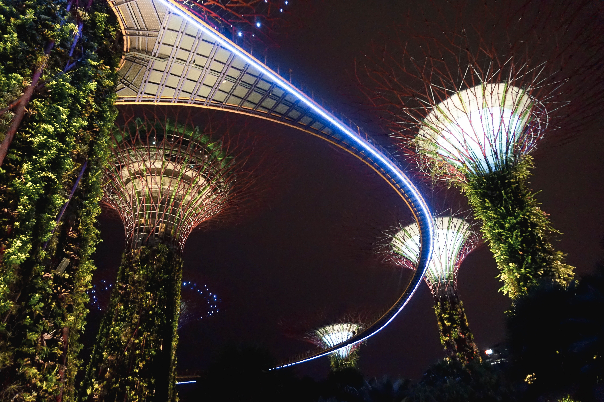
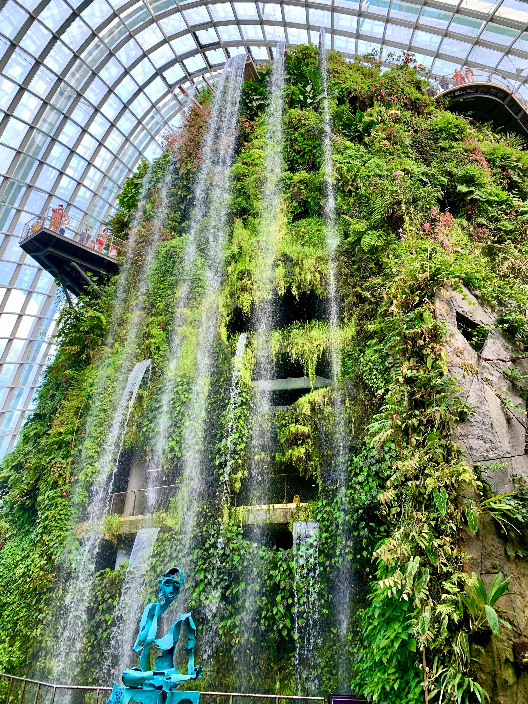
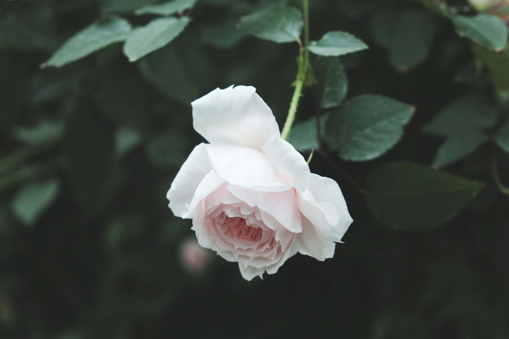
The Gardens by the Bay is a nature park spanning 101 hectares in the Central Region of Singapore, adjacent to the
Marina Reservoir.
The park consists of three waterfront gardens:
-Bay East Garden
-Bay South Garden
-Bay Central Garden
Bay East Garden, the second largest of the three gardens, offers a tranquil respite from the bustling city
and a stunning view of the Singapore skyline even as it unfolds over the next century.This green space
is open to the public and has immense potential for future development as a waterfront garden.
The Bay South Garden showcases the best of tropical horticulture and garden artistry, with a mass display of
tropical flowers and colourful foliage. A rich diversity of plants from different parts of the world have been planted
in the Gardens, enabling visitors to experience different botanical worlds, from South America to the Mediterranean,
right here in sunny Singapore. Together with these will be a wide mix of indigenous plants,
reflecting the cultural wealth of our communities.
Bay Central Garden with the area of 15 hectares is the smallest garden in the bay.
The central garden with its 3-kilometer seafront is an ideal place for scenic walks.
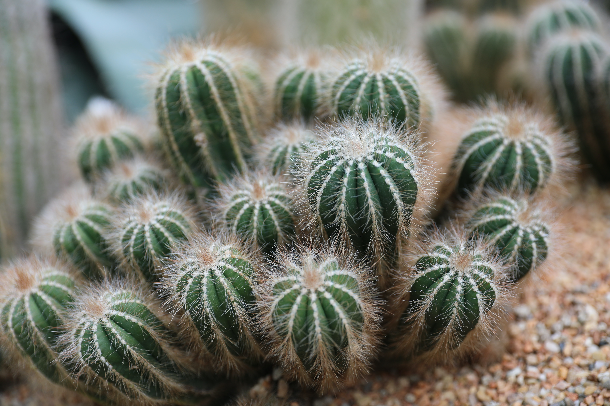